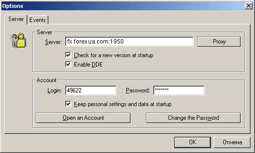

DDE сервер и
экспорт котировок в MetaStock,
Omega 2000 и
др.
Если набор индикаторов технического анализа в
MetaTrader вас не удовлетворяет, есть возможность экспортировать данные из
MetaTrader в Metastock, Omega Prosjute 2000 и др. в режиме реального
времени. Стандартом де-факто в экспорте котировок стал протокол DDE
(Dynamic Data Exchange). Для активации режима экспорта котировок из
MetaTrader по протоколу DDE необходимо выбрать пункт меню Tools->Options->Server->Enable DDE.

Формат
DDE запросов (пример в c:\Program Files\MetaTrader\DDE-sample.xls):
- запрос BID: =MT|BID!USDCHF
Результат: 1.5773
- запрос ASK: =MT|ASK!USDCHF
Результат: 1.5778
- запрос HIGH: =MT|HIGH!USDCHF
Результат: 1.5801
- запрос LOW: =MT|LOW!USDCHF
Результат: 1.5741
- запрос TIME: =MT|TIME!USDCHF
Результат: 21.05.02 9:52
- запрос QUOTE: =MT|QUOTE!USDCHF
Результат: 21.05.02 9:52 1.5773 1.5778 1.5776
Назад Содержание Далее
 |